Acme
Acme 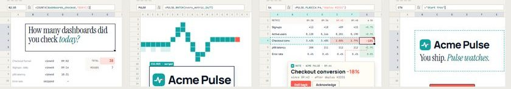
Spreadsheet Cinema
The frame is a live spreadsheet: the selection is the camera, the formula bar is the subtitle track and Pulse is a dashed teal selection scanning every row.
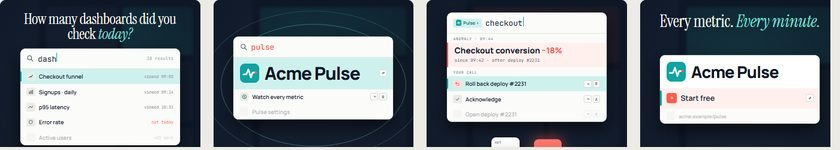
⌘K Keyboard Symphony
One oversized command palette over a blurred app; the query is the headline and 3D keycaps are struck on the kick drum.
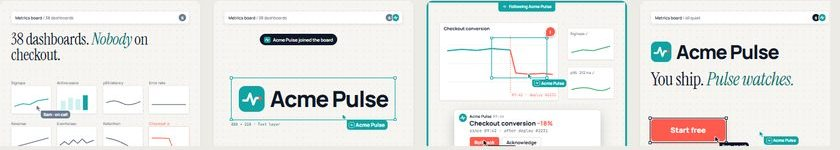
Multiplayer Cursors
A shared canvas where a teal 'Acme Pulse' cursor inspects every chart frame and the on-call human flies over to make the call.
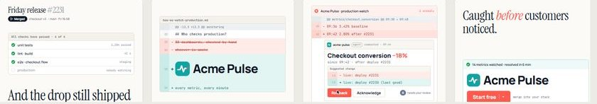
Code Review Diff
The story as a pull request: Pulse is the status check that keeps running after merge and posts a suggested rollback that only a human can apply.
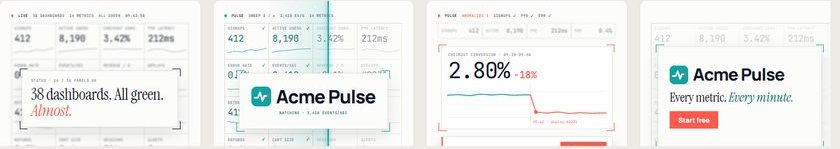
Light-Mode Data HUD
A near-white cockpit of sixteen hairline micro-panels; a teal scanline sweeps it and corner brackets snap onto the one wrong number.
OS Window Choreography
Windows are the cast: dashboards pile up, spread Exposé-style and genie away while Pulse stays on top as a small utility window.
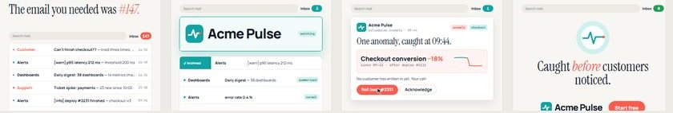
Inbox Choreography
A flooded inbox triages itself in rhythm until one calm email from Pulse asks for a single decision, then inbox zero.
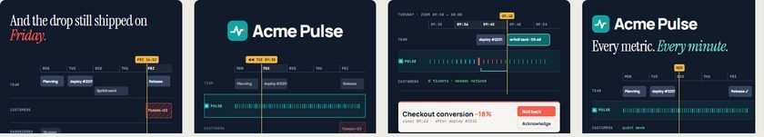
Calendar Timeline Scrub
The work week as an editing timeline: Pulse is a lane of per-minute ticks, and a Friday incident fades out once the Tuesday catch lands.
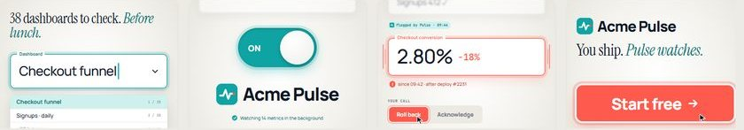
Form-Field Macro
Form controls shot like macro product photography: a giant field shakes red with the fix suggested, and Pulse is a switch you flip on.
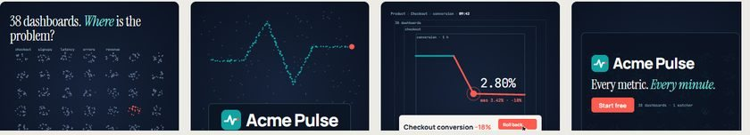
Powers-of-Ten Zoom
One continuous infinite-canvas dive from 38 dashboards of dots down to the single wrong data point Pulse found, and back out as every dot turns teal.
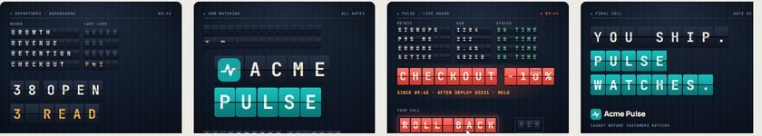
Split-Flap Board
Every metric is a row on a clattering departures board; one row flips to coral and holds until a human calls it.
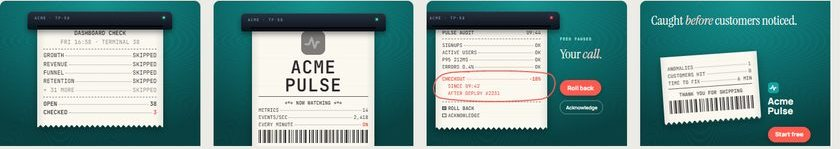
Thermal Receipt
Pulse prints a running receipt of your product; the feed stalls on the one wrong line and a coral circle lands around it.
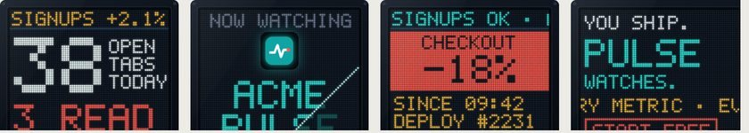
LED Dot-Matrix Ticker
A physical LED sign scrolls your metrics like a stock ticker until one freezes and inverts into a coral alert block.
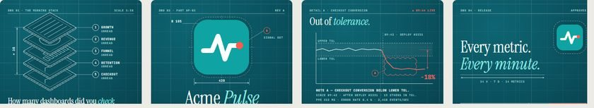
Blueprint Drawing
The product is drafted like a machine part; the metric that falls outside its tolerance band gets a coral revision cloud.
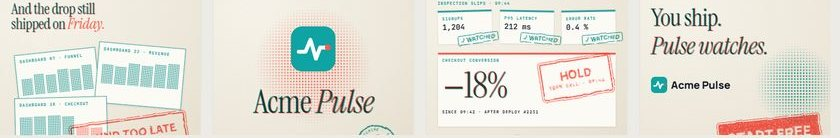
Rubber Stamp & Riso Ink
Two riso inks and two rubber stamps: teal '✓ WATCHED' on every healthy slip, one coral 'HOLD — YOUR CALL' on the anomaly.
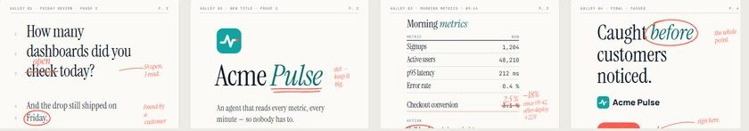
Proofreader's Redline
Metrics set like a galley proof; Pulse strikes the wrong figure with a coral pen, writes the right one and a human initials it.
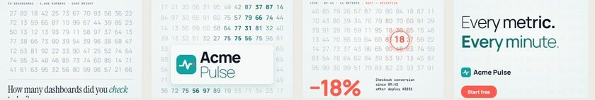
Variable-Font Data Morph
Type weight is the data: a weight wave scans a grid of numerals and the one that stays heavy is the anomaly.
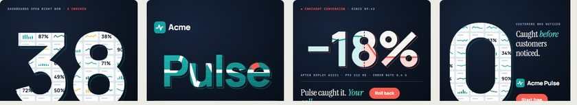
Typographic Window Reveal
Giant numerals fill the frame and act as windows onto the product; scene changes dive through a glyph's counter.
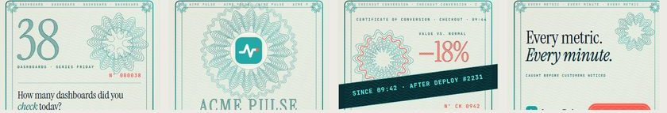
Guilloche Banknote Engraving
Every frame is printed like a banknote; Pulse's UV sweep breaks one rosette ring in coral and reveals the hidden context.
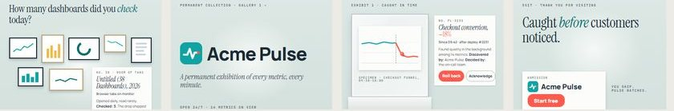
Museum Specimen Labels
Every caught anomaly becomes a curated museum exhibit: a pinned specimen under glass with a crisp wall label.
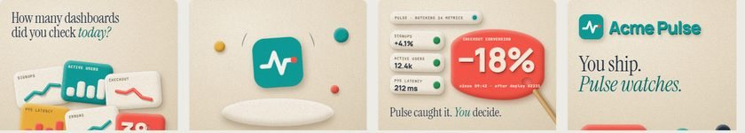
Clay Studio
Metrics as matte plasticine slabs on a felt table; Pulse's sculpting stick pokes the one lumpy coral tile.
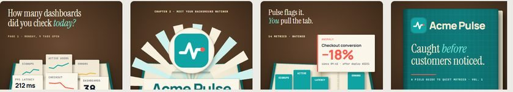
Pop-up Book
A hardcover pop-up book where metric stands rise from the gutter and the anomaly pops up in coral with a pull-tab to roll back.
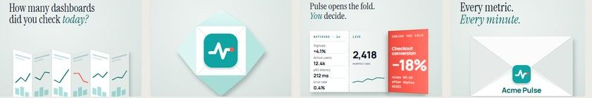
Origami
One sheet of paper folds through the whole story; the anomaly is printed in coral on the inside of a peek fold.
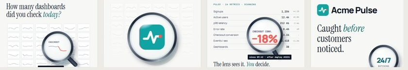
Glass Loupe & Refraction
A heavy optical loupe glides over a calm metrics table and reveals the coral anomaly that is invisible outside the glass.
Liquid Metaball
Metrics flow as glossy teal droplets into one calm pool; the anomaly is a coral bead that refuses to merge.
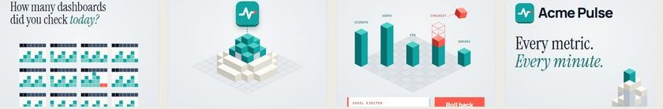
Pixel-to-Voxel
Flat pixel dashboards extrude into a voxel skyline; the anomalous tower ejects a coral voxel and leaves dashed ghost cubes.
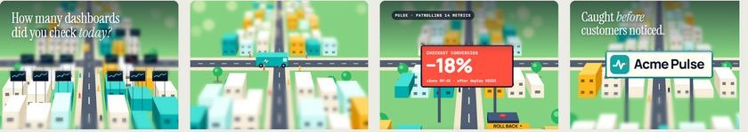
Tilt-Shift Diorama
A toy model town under a tilt-shift lens; the Pulse van patrols and focus pulls to the one billboard that dropped.
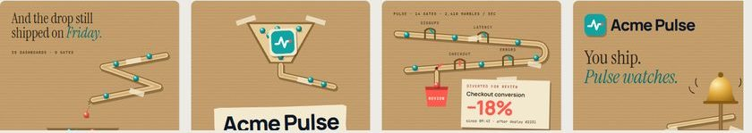
Marble-Run Machine
A kraft-cardboard marble run where metrics roll through stencilled gates and the failing marble is diverted to a coral review cup.
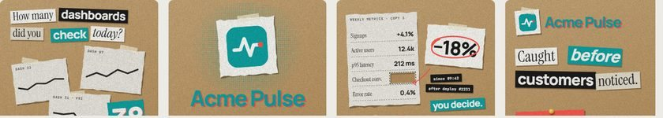
Stop-Motion Paper Collage
Photocopied dashboards and ransom-note words on kraft; the anomaly value is snipped out and replaced by a coral-circled clipping.
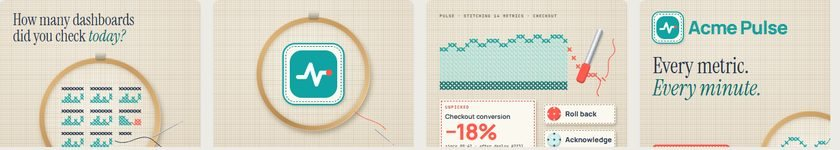
Stitch & Thread
Metrics cross-stitched in teal on linen; a seam ripper unpicks the coral stitches where checkout conversion dropped.
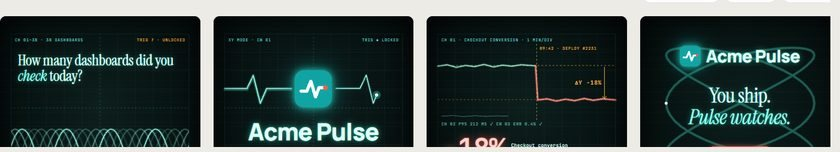
Vector-Phosphor Oscilloscope
A single glowing electron beam draws the whole film on a black scope face, and the anomaly is the moment the trace turns coral.
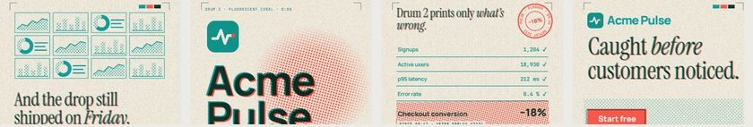
Risograph Two-Drum Print
Two riso inks on uncoated paper: the first drum prints your dashboards, and Acme Pulse is the coral second drum that lands only where something is wrong.
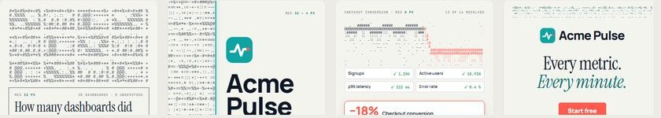
ASCII / Dither Resolve
Everything starts as a coarse field of characters and sharpens into crisp UI as Acme Pulse understands it, except the one coral cluster that refuses to resolve.
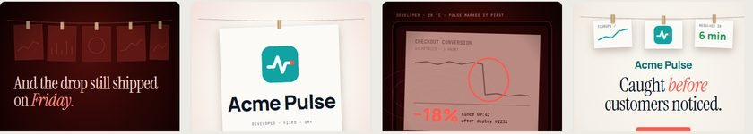
Darkroom Development
In a red safelight room the metrics print slowly develops in the tray, but the coral mark on the problem is there first, because Acme Pulse already found it.
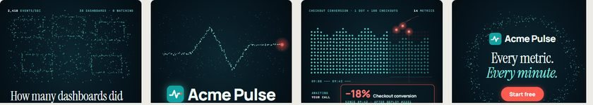
Point Cloud
Thousands of event particles morph from a swarm of dashboards into the pulse line and a dot-stacked chart, where three coral embers refuse to settle.
Sonar Sweep
A calm scope whose conic beam never stops turning: metrics are blips, and one pings back coral so a human can decide.
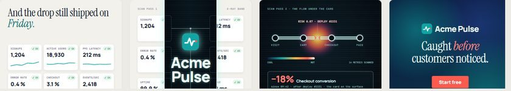
X-Ray / Thermal Scanner
Every card on the surface says OK, but inside a scanner band the product turns to X-ray and one bone of the checkout flow is fractured.
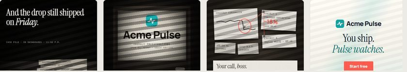
Noir
A 1940s detective story in hard light and venetian-blind shadow: Acme Pulse reads every file overnight, circles the clue in coral, and hands the human the call at dawn.
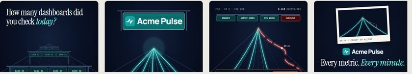
Long-Exposure Light Trails
Night photography with the shutter held open: metrics are teal light trails racing to the vanishing point, and one coral trail swerves out of its lane on the record.
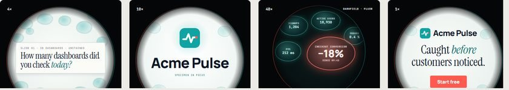
Under the Microscope
Metrics become specimens under a circular eyepiece: Acme Pulse zooms from 4× to 40×, and in darkfield only the anomaly fluoresces coral.
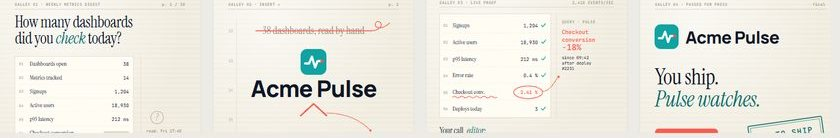
The Editor's Pass
Your metrics digest as a galley proof: an unseen copy editor marks the one wrong figure and a human initials the page.
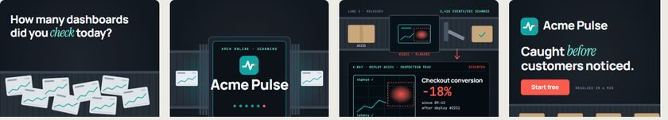
Security Belt Scan
Every release rides a conveyor through an X-ray arch; the one package with a coral glow is diverted to a human while the belt keeps rolling.
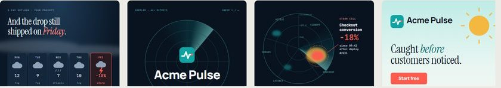
The Weather Forecast
Product health as a Doppler weather map: one storm cell blooms over Checkout, a human forecaster calls it, and the film ends in clear skies.
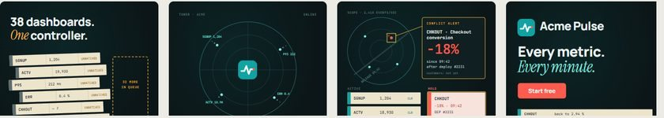
Air-Traffic Control
Every metric is a flight on a calm radar console; the one in conflict moves to HOLD and the human controller clears it.
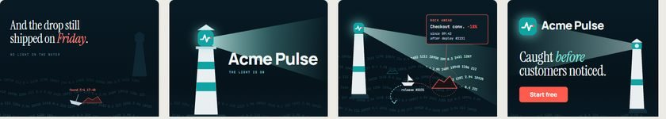
The Lighthouse
A lighthouse lit by the Acme mark sweeps a sea of live numbers; the beam reveals one hidden rock and the keeper turns the release back.
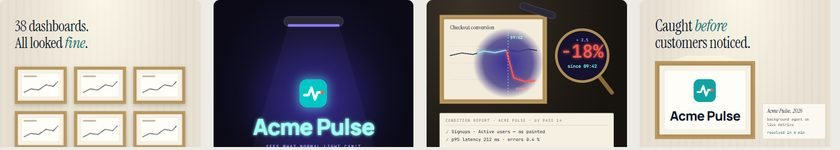
Conservator's UV Lamp
Dashboards hang like paintings that look flawless in normal light; a UV lamp reveals the overpainted figure and a human conservator decides.
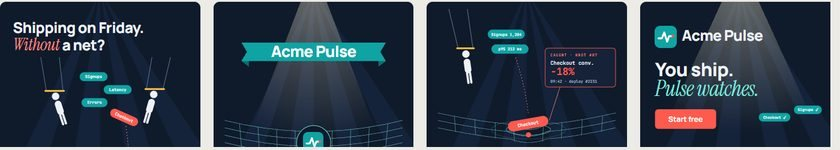
The Safety Net
A flat big top where artists pass metric chips mid-air; the Checkout chip slips, a net of data lines catches it and the ringmaster decides.
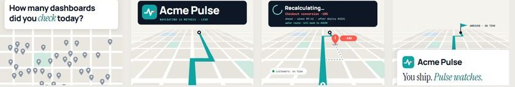
GPS Reroute
Your release is a route on a tilted map; Pulse spots the hazard ahead, shows 'Recalculating…', and you confirm the safe road and still arrive on time.
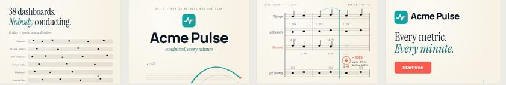
The Conductor's Score
A live orchestral score where each staff is a metric; the Checkout note goes sour, Pulse circles it, and the human gives the cue that retunes it.
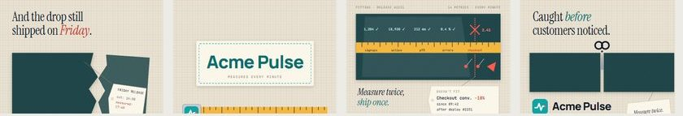
The Tailor's Fitting
'Measure twice, cut once' on a cutting table: a tape measures every metric, chalk marks the one that doesn't fit, and only after the human's call do the shears make one clean cut.
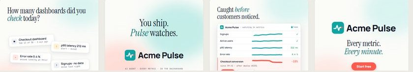
Clean Product Film
The airy baseline: real product UI on warm white with soft colour clouds, one coral anomaly row and one human click.
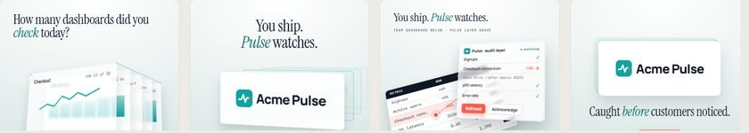
Depth / 3D
Glass plates floating in perspective: your dashboard on the floor, Pulse as the audit layer hovering above it.
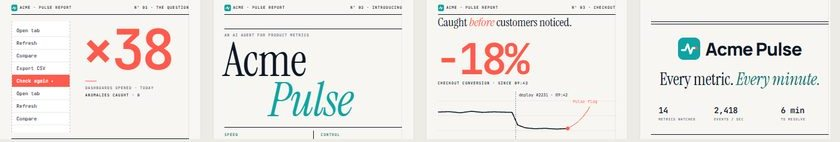
Editorial Data
A Swiss financial report come alive: hairline grid, giant mono numerals, one accent per frame and a circled −18%.
Agent Chat
One chat window for the whole film: the agent messages first and the anomaly arrives as a tool card with a Roll back chip.
Bento Grid
A 6×6 bento of white tiles — one message per tile, collapsing into one hero tile on the drop.
Workflow Canvas
A dark node canvas where packets hop on the beat and one coral branch hands the anomaly to a human.
Isometric World
A floating isometric factory: your pipeline as a belt, Pulse as a teal glass layer, one coral cube diverted to a human.
Hand-Drawn Marker
Marker scribbles on dotted paper for the problem, an eraser on the drop, and clean UI with one coral ring for the proof.
Mobile Notifications
The phone as stage: a lock screen buried in banners, then a Live Activity that surfaces one anomaly with a Roll back button.
Neo-Brutalist
Hard shadows, ink outlines, stickers and a ticker: loud neo-brutalist cards that press on every beat.
Dark Keynote
A cinematic navy keynote stage: one spotlight per frame and a teal AI edge glow that flashes coral when Pulse finds the anomaly.
Mascot Agent
The agent as a quiet teal character born from the logo’s dot, peeking over your dashboard and pointing at the anomaly with its eyes.
Isotype Unit Chart
Neurath-style picture statistics: countable pictogram rows where the anomaly is two carts that simply go missing.
Bar Chart Race
A broadcast-style ranking race where Acme Pulse enters at #1 and Checkout conversion plunges down the board.
Sankey Leak
A Minard-style flow of ribbons where the anomaly is a coral leak peeling off the checkout stage.
Small Multiples
A Tufte-style grid of same-scale sparklines where one tile, Checkout conversion, breaks the pattern.
Pulsar Ridgeline
Unknown Pleasures-style stacked ridgelines where the checkout peaks go flat the minute the deploy lands.
Rosling Bubble Trails
Gapminder-style bubbles and trails under a giant watermark clock; the checkout bubble sinks at 09:42.
Trace Waterfall
A tracing-UI film: log stream, then cascading spans where one coral span after deploy #2231 explains the −18%.
Hex Tile Cartogram
A newsroom hex tile map where Pulse lights every region and one tile's coral drop spreads to its neighbours.
Nightingale Rose
An engraved, Victorian polar-area rose where three wedges after 09:42 fall short of the dotted norm.
Streamgraph River
An organic streamgraph river where the checkout layer pinches and turns coral after deploy #2231.
Living Widgets
Dashboard widgets become googly-eyed characters that doze until Pulse makes them look — the checkout card literally slumps.
Felt Puppet Show
A felt hand-puppet Pulse pops up on a tabletop stage to point at the anomaly — only a real human hand can press Roll back.
8-Bit Sidekick
Pulse as a pixel-art sidekick: metrics are platforms, the checkout block crumbles, a red ‘!’ pops and Player 1 chooses ROLL BACK.
Sticker Cast
A die-cut sticker world where a one-eyed teal Pulse sticker spots the anomaly and an emoji cast reacts from tired to shocked to happy.
Mood Blob
A single teal blob whose outline is the system’s mood: bouncy when fine, stretched and bristling at the anomaly, a cushion once you decide.
Rubber-Hose Gloves
A 1930s rubber-hose cartoon where Pulse is a teal alarm clock that rings and points at the broken chalkboard while a human hand pushes the ROLL BACK plunger.
Shadow Puppet Theatre
Cut-paper silhouettes on a tinted screen: a heron stands in the river of a metric and sees the waterfall first; a human lifts the Roll back lantern.
Pocket Pet
Pulse as a virtual pet in a teal egg keychain: its LCD critter flashes a ‘!’ when checkout gets sick and you press A to roll back.
Night Owl
A geometric night-owl mascot perched on the metric line: when the branch sags it swivels and hoots, and a human in the lit window rolls back.
Kaomoji Terminal
Pulse is just a kaomoji in a terminal — (-_-) → (•_•) → (°o°;) → (^_^)b — and the human answers the roll-back prompt with one key.
Bauhaus Primer
Circle, square, triangle and a black bar: a Bauhaus primer where the one shape that falls out of the grid is the anomaly.
Swiss Grid
International Typographic Style: a visible 12-module grid, giant numerals and one coral row that says everything.
Constructivist Agitprop
1920s agitprop poster grammar: a teal wedge pierces the circle of blind spots and a megaphone shouts the anomaly.
Art Deco Marquee
A 1930s premiere: sunbursts, stepped gold frames and an elevator dial whose coral needle swings to −18%.
Cut-Paper Title Sequence
Mid-century opening titles: sliding paper bars, a hand-cut zigzag pulse and a torn bar that falls away as the anomaly.
Op Art Illusion
Riley and Vasarely optical art: healthy data is a perfect pattern, the anomaly is a coral warp your eye catches first.
Pop-Art Ben-Day
Lichtenstein-style comic panels: Ben-Day dots, speech balloons and a ZAP! that marks the anomaly.
Memphis Milano
80s Memphis Milano maximalism: laminate slabs, squiggles and terrazzo, where a friendly squiggle snaps into a coral zigzag.
Beveled '95 Desktop
Mid-90s desktop nostalgia: cascading spreadsheet windows, a Pulse alert dialog and a Start button that says Start free.
Y2K Liquid Chrome
Turn-of-the-millennium tech optimism: liquid-chrome lettering, candy-teal jelly windows and a coral gel capsule for the anomaly.
One-Take Oner
The whole film as one unbroken camera move through a UI set: dashboard corridor, reveal room, crane down to the anomaly, pull out the window.
Match Cut
Every beat hands off through one coral circle in the same place: clock face → Acme mark → anomaly point → the tagline’s full stop.
Split Screen
Hard ink gutters split the frame into simultaneous views: six dashboards, a slammed gutter for the reveal, three synced cameras on one anomaly, then the gutters close.
Whip Pan
Rooms of a 360° panorama joined by 0.25 s whips that smear the world into streaks and land sharp on each downbeat.
Speed Ramp
Time is the edit: 8× fast-forward through a week of dashboards, a snap to 1× on the drop, ¼× slow motion for the human decision, with a speed graph under every frame.
Dolly Zoom
Hitchcock’s vertigo shot on the proof beat: the anomaly card stays locked in size while the dashboard wall behind it stretches into a tunnel.
Overhead Desk
A 90° top-down desk film: printed dashboards swept away by a hand, the Acme mark set down on the drop, a finger tapping Roll back on a phone notification.
Rack Focus
Shallow depth of field does the storytelling: focus racks from 38 tabs to the Acme Pulse screen to the one sharp anomaly, then stops down for the CTA.